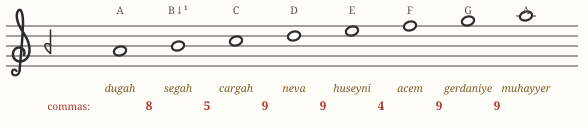
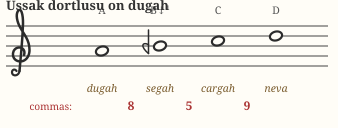
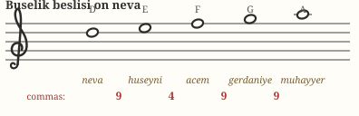
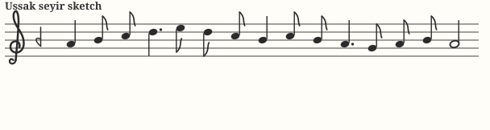

Chapter 07 · third makamMakam Uşşak
Uşşak — “the lovers” in Arabic — is the most sung makam in the Turkish world: the backbone of folk songs, hymns (ilahi), and tender şarkıs. Its soul lives in one note: a second degree that leans down toward the tonic like a voice about to break.
Identity card
| Tonic (durak) | dügâh — written A |
|---|---|
| Dominant (güçlü) | nevâ — D, the 4th degree |
| Leading tone (yeden) | rast — G, a full tone below (no sharpened leading tone!) |
| Construction | Uşşak dörtlü on dügâh + Bûselik beşli on nevâ |
| Seyir direction | ascending (çıkıcı) |
| Key signature |  segâh (B −1 koma) only segâh (B −1 koma) only |
The scale

On paper Uşşak looks like A natural minor with one comma shaved off B. In sound, that comma changes everything: the interval from A to segâh is a büyük mücenneb (8 commas), and the melody keeps wanting to sag onto the tonic through it. Compare the two seconds directly:
The two genera


Note the seam: Uşşak divides its octave at the fourth, so the güçlü is D even though it is only the fourth degree. Mid-phrase pauses on D, final cadences on A — that two-level gravity is very audible in folk repertoire.
Seyir: how Uşşak moves
An ascending makam: begin around the tonic (or directly on the güçlü in many folk songs), unfold the lower tetrachord — dwelling lovingly on segâh — cadence on nevâ, then descend with the segâh pulling down onto dügâh. The final approach is usually from below, through the whole-tone yeden rast, which gives Uşşak cadences their modal, un-Western calm.

Repertoire to listen for
| Piece | What it is |
|---|---|
| “Uzun İnce Bir Yoldayım” — Âşık Veysel | The great Anatolian bard's signature song, catalogued in Uşşak; listen to how every line settles onto the tonic through that low second. |
| Countless ilahis and the ezan | The afternoon (ikindi) call to prayer is traditionally in Uşşak family makams in Turkey; mosque recitation is saturated with this sound. |
| Şevki Bey şarkıs | The 19th-century master left dozens of Uşşak songs — the classical, urban face of the makam. |